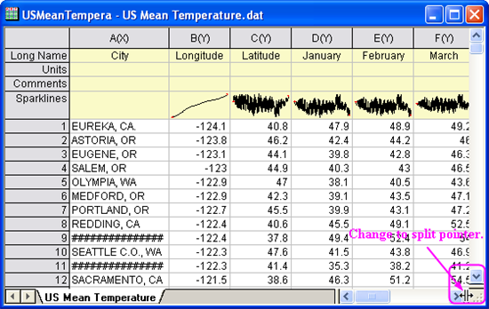
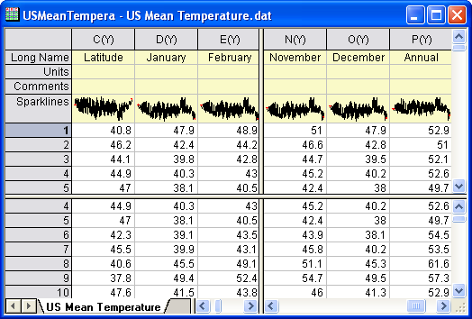

Arbeitsblätter mit Hilfe von Trennelementen in Bereiche trennen
In Origin 8.5.1 können Arbeitsblättern und Matrixblätter mit Hilfe von Trennelementen in Bereiche aufgeteilt werden. Sie können innerhalb jeden Bereichs scrollen während die Zeilen und Spalten in anderen Bereichen sichtbar bleiben.
Ein Arbeits-/Matrixblatt trennen
Sie können Arbeits- und Matrixblätter mit Hilfe des Origin-Menüs oder durch Ziehen des Trennelements trennen.
- Trennen mit Hilfe des Menüs
-
- Aktivieren Sie ein Arbeits- oder Matrixblatt. Markieren Sie eine Zelle.
- Wählen Sie Fenster: Trennen im Origin-Menü.
- Das Arbeits- oder Matrixblatt wird mittels einer horizontalen und einer vertikalen Trennlinie bei der markierten Zelle in 4 Bereiche getrennt. Um das Trennelement in eine neue Position zu verschieben, ziehen Sie einfach das horizontale oder das vertikale Trennelement auf die gewünschte Zeile oder Spalte.
-
- Beachten Sie, dass wenn sich die markierte Zelle in der ersten Spalte oder Zeile befindet, nur das horizontale bzw. vertikale Trennelement erstellt werden kann.
- Trennen durch Ziehen des Trennelements
-
- Zeigen Sie mit der Maus unten rechts auf das Blatt am unteren Ende der vertikalen Bildlaufleiste (horizontales Trennelement) oder der horizontalen Bildlaufleiste (vertikales Trennelement).
- Wenn der Zeiger zu einem Trennzeiger wird, ziehen Sie ihn auf die gewünschte Position. Es wird ein horizontales oder vertikales Trennelement erstellt.
- 
- Ein Arbeitsblatt mit horizontalem oder vertikalem Trennelement wird wie folgt angezeigt.
- 
Aufheben der Trennung eines Arbeits-/Matrixblatts
Sie können die Trennung eines Arbeits- oder Matrixblatts mit Hilfe des Origin-Menüs oder durch Ziehen des Trennelements auch aufheben.
- Aufheben der Trennung mit Hilfe des Menüs
-
- Aktivieren Sie ein Arbeits- oder Matrixblatt.
- Wählen Sie Fenster: Aufteilung entfernen im Origin-Menü.
- Aufheben der Trennung durch Ziehen des Trennelements
-
- Ziehen Sie das horizontale oder vertikale Trennelement aus dem Arbeits- oder Matrixblatt heraus, um das Trennelement zu entfernen.
Beachten Sie, dass Trennen oder Aufteilung entfernen nicht für Matrixblätter im Bildmodus verfügbar ist.